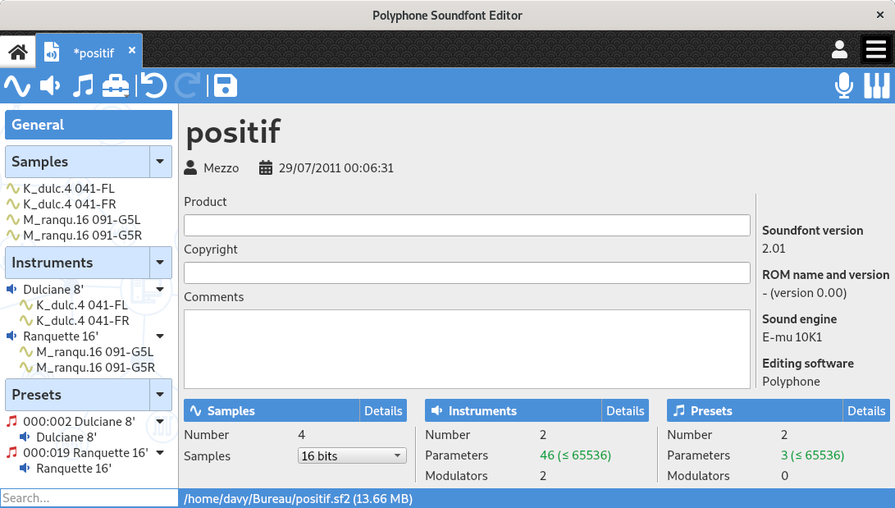

Editing pages¶
When a soundfont is opened, the tree is filled with the content of the soundfont. The editors will appear to the right of the tree when elements are selected:
selecting the header “General” will show the editor of the general information,
selecting one or more samples will show the sample editor,
selecting instruments or instrument divisions will show the instrument editor,
selecting presets or preset divisions will show the preset editor.

Contents: